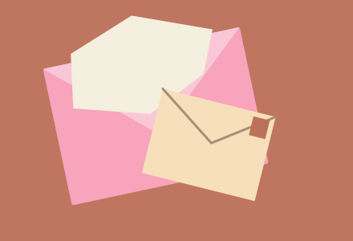
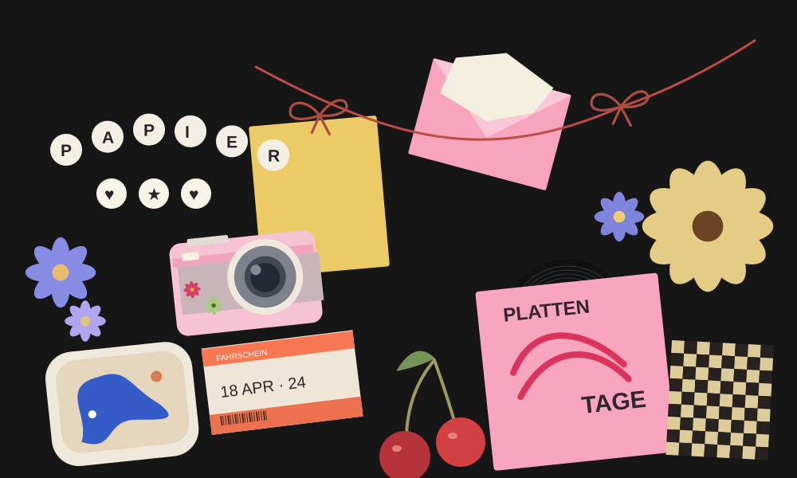

دوازده نامه با پاکت اصلی، کاغذ نخودی و ردّ مهرهای دستخورده.

داستان آرشیو
مغازهای شبیه یک کشو
اینجا هر چیز کوچک قصهای دارد. دفترچههای نیمهپر، بلیتهای تاخورده و دوربینهای جیبی، از میان صندوقها و بازارهای جمعه به یک قفسه رسیدهاند.


اینجا هر چیز کوچک قصهای دارد. دفترچههای نیمهپر، بلیتهای تاخورده و دوربینهای جیبی، از میان صندوقها و بازارهای جمعه به یک قفسه رسیدهاند.
دوازده نامه با پاکت اصلی، کاغذ نخودی و ردّ مهرهای دستخورده.
دوربین کوچک با بند دستی و حلقهٔ فلزی؛ یادگاری یک سفر کوتاه.
یک دسته بلیت قدیمی با شمارههای دستی و نوارهای چاپ نارنجی.
صفحهٔ هفت اینچ با برچسب صورتی و جلد چاپ دو رنگ.
رنگ، جنس یا ردی از یک خاطره را دنبال کنید.
مشخصات هر تکه را باز کنید و موضوع درخواست را بردارید.
در فایل درخواست، روش دریافت دلخواهتان را ثبت کنید.
هر تکه پیش از این هم زندگی کرده؛ اینجا قصهاش را دوباره ورق میزنیم.
مشخصات شیء یا ردّی از آن را بنویس و نسخهٔ درخواست را ذخیره کن.
 انتخاب این قالب
انتخاب این قالب